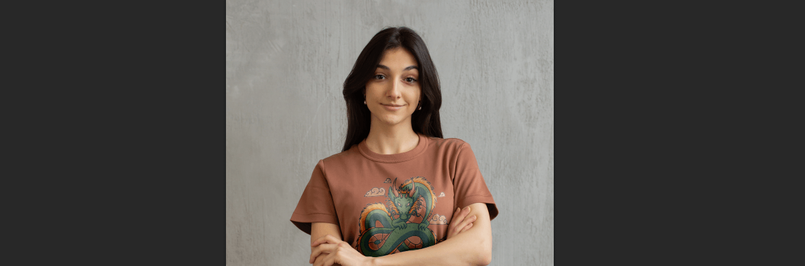
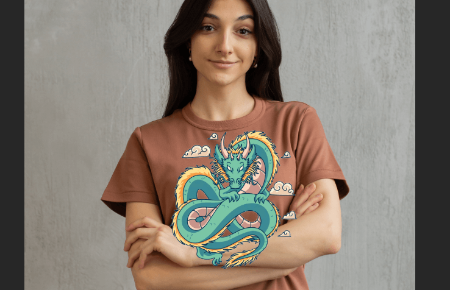
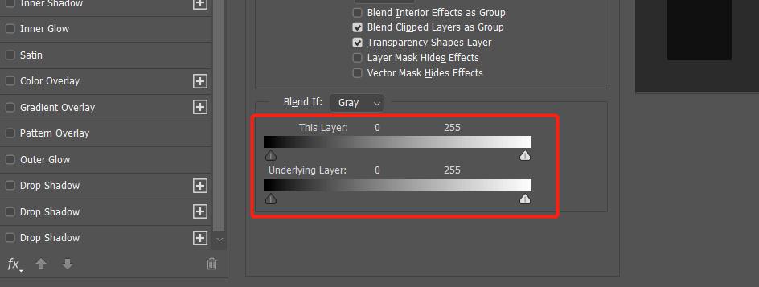
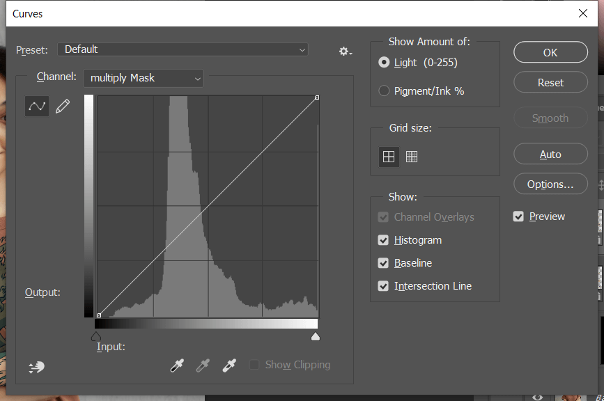
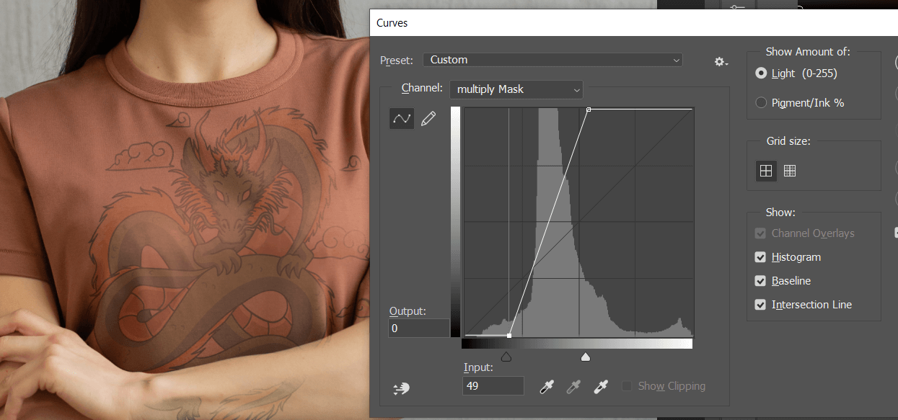
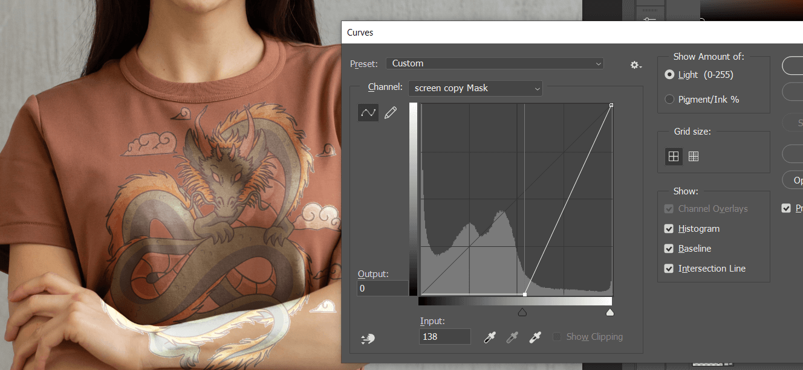

给T恤添加图案 in Photoshop

图像中的衣服是一个立体空间，如果想要将一个二维图像添加到衣服表面需要进行一些处理。下面就介绍简单的过程。
之前介绍过如果给一面旗帜添加文字信息可以参考：https://blog.niekun.net/archives/261.html
用到的主要技术：扭曲工具、通道选区、multiply 混合、screen 混合、curve 曲线、quick selection tool
原图如下：
首先导入需要添加的图案：

将图案转换为 smart object，首先使用扭曲工具调整图案的立体感，需要根据衣服褶皱的变化去调整图案的不同区域，可以设置将背景显示出来方便观察调整：
调整后如下：
如果图案清晰度过高，和背景相比差异太大，可以使用高斯模糊适当降低图案清晰度。
按 ctrl 点击图层选取图案部分选取，然后在图案下面新建 hue saturation 图层将图案背后的衣服部分饱和度降低，避免以后影响图案部分颜色效果：
复制 dragon 图层，然后屏蔽原始 dragon 图层作为备份，将复制的图层重命名为 multiply，混合模式改为 multiply：
这个图层是用来处理暗部区域，由于我们只想衣服的暗部区域加载这个暗部图案，所以我们需要分离衣服暗部和亮部区域。
之前的教程中，介绍了使用 sytle 中的 blend if 来过滤暗部亮部，达到预期效果：

但是这个方法也有缺陷，第二个调整栏会将当前图层下面的所有图层作为整体对待，而不能单独选取某一个图层进行混合，如果我们需要连续建立了多个进行 blend if 混合的图形对最下面的某个图片进行混合，那么这些混合图层之间互相也会影响。
下面介绍如果通过选区来独立处理暗部亮部区域。
先将除背景图层外的所有图层屏蔽，然后选中背景图层，注意一定要先关闭其他图层不然下面的选区会受到影响：
进入通道菜单栏，选择一个对比大的通道，按住 ctrl 点击通道获取选区，这里选择 red 通道，注意这里看到的通道不能包含除背景图层外的其他图层，否则选区会不准确：
这里的选区选区的就是图像的亮部区域。
回到图层，选择 multiply 图层添加蒙版：
由于选取部分是亮部区域，但是我们的 multiply 处理的是暗部区域，所以选中图层蒙版点击 ctrl I 反转蒙版即可：
这样蒙版白色区域就表示暗部区域。
观察蒙版，整体是灰色的，这样暗部亮部分离就不是很明显，为了获得选区更大的对比度，可以对蒙版进行曲线操作，选中蒙版点击 image - adjustment - curve：

此时，我们期望将亮部区域排除，也就是蒙版的暗部区域让他更暗，我们对比图片调整曲线：

曲线中将左侧向右调整蒙版的黑色区域增加，这样图像亮部就过滤掉了，同时我们将右侧曲线也向右调整是为了更加提高对比。
然后复制 multiply 图层，重命名为 screen，同时将混合模式改为 screen：
screen图层用来处理图章的亮部区域，但是这里的蒙版白色区域还是表示暗部区域，所以点击 ctrl I 反转图层蒙版，这样图层就只对作用于亮部区域：
根据实际情况，可以对 screen 图层蒙版调整曲线，使其之影响亮部区域：
这样基本框架就完成了，下面增加更多的对比使整体更加有立体感。
复制 multiply 图层，使暗部更暗，调整蒙版曲线使图层只作用于最暗的地方，根据情况调整不透明度：

同样的复制 screen 图层，使亮部更量，调整蒙版曲线使图层只作用域最量的地方：

这样图案立体感就更突出了一些，可以根据实际情况复制更多的 multiply 和 screen 图层进行调整。
然后根据实际情况我们调整图案的色相饱和度，按住 ctrl 点击图案图层获取选区，在最上边新建 hue saturation 图层，这样调整饱和度只影响图案部分：
最后我们处理图案多余部分，将图案调整图层都放在一个 group中：
选中背景图层，使用 quick selection tool 快速选区工具或者其他你熟悉的工具，将手臂部分选出来：
选中 dragon group 添加蒙版，然后 ctrl I 反转蒙版，如果还有哪里有多余部分，使用画笔工具涂抹蒙版调整即可：
最终效果如下：
标签：无